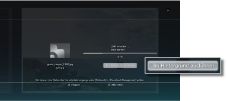
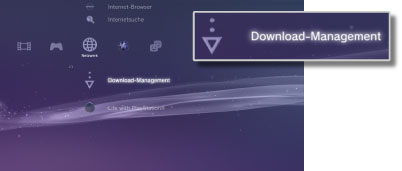

Netzwerk > Herunterladen im Hintergrund
Herunterladen im Hintergrund
Das Herunterladen im Hintergrund ist eine Funktion, bei der Sie andere Funktionen ausführen können, während mehrere Datenelemente oder Daten mit einer beträchtlichen Dateigröße heruntergeladen werden. Diese Funktion steht nur zur Verfügung, wenn [Im Hintergrund ausführen] beim Herunterladen auf dem Bildschirm angezeigt wird.

Anmerkungen
- Je nach Datentyp oder Menge der herunterzuladenden Datenelemente ist das Herunterladen im Hintergrund unter Umständen nicht möglich.
- Heruntergeladene Daten wie Spiele oder Videodateien müssen möglicherweise installiert werden, bevor sie verwendet werden können. Wenn das Herunterladen abgeschlossen ist, werden Daten, die installiert werden müssen, in den einzelnen Kategorien als
 oder
oder  angezeigt.
angezeigt. - Das Herunterladen im Hintergrund steht möglicherweise nicht zur Verfügung, wenn sich auf der Festplatte nicht installierte Daten befinden.
- Wenn das PS3™-System während des Herunterladens im Hintergrund ausgeschaltet wird, wird der Status des Herunterladens gespeichert. Das Herunterladen wird automatisch neu gestartet, wenn das PS3™-System das nächste Mal eingeschaltet und eine Verbindung zum Internet hergestellt wird.
- Das Herunterladen im Hintergrund wird vorübergehend gestoppt, wenn eine der folgenden Funktionen ausgeführt wird. Das Herunterladen wird automatisch neu gestartet, sobald die Funktion abgeschlossen ist.
- - Wiedergeben einer Blu-ray Disc oder DVD
- - Verwenden von Netzwerkfunktionen von Online-Spielen*
- - Starten von Software im PlayStation®2-Format
- - Starten von
 (Folding@home™)
(Folding@home™) - - Verwenden von Sprach-/Video-Chat
- - Ausführen einer Systemaktualisierung
- - Einstellen von Optionen unter
 (Einstellungen)
(Einstellungen)
*
Beim Beenden eines Spiels wird das Herunterladen im Hintergrund vorübergehend angehalten.
Hinweise
- Einige Softwaretitel im PlayStation®2- oder PlayStation®-Format werden auf dem PS3™-System anders als auf einem PlayStation®2- oder PlayStation®-System ausgeführt oder sie werden auf dem PS3™-System nicht ordnungsgemäß ausgeführt.
- Außerdem kann Software im PlayStation®2-Format auf einigen PS3™-Systemen nicht ausgeführt werden. Näheres dazu finden Sie unter [Typen abspielfähiger Discs] oder auf der SCE-Website für Ihre Region. Sie können auch in der Dokumentation zum PS3™-System nachschlagen.
Download-Management
Diese Option wird nur angezeigt, wenn im Hintergrund ein Herunterladevorgang läuft. Beim Herunterladen von Daten von  (Internet-Browser) oder
(Internet-Browser) oder  (PlayStation®Store) können Sie den Status des Herunterladevorgangs überprüfen oder das Herunterladen abbrechen. Wählen Sie
(PlayStation®Store) können Sie den Status des Herunterladevorgangs überprüfen oder das Herunterladen abbrechen. Wählen Sie  (Download-Management) unter
(Download-Management) unter  (Netzwerk).
(Netzwerk).

Überprüfen des Status des Herunterladevorgangs
Wählen Sie das Icon für die Daten, bei denen Sie den Status des Herunterladevorgangs überprüfen wollen, drücken Sie die  -Taste und wählen Sie [Status] aus dem Menü „Optionen“.
-Taste und wählen Sie [Status] aus dem Menü „Optionen“.
Abbrechen des Herunterladevorgangs
Wählen Sie das Icon der Daten, deren Herunterladevorgang Sie abbrechen wollen, drücken Sie die -Taste und wählen Sie [Abbrechen] aus dem Menü „Optionen“. Nach Abbruch des Herunterladevorgangs werden die Daten aus (Download-Management) gelöscht.
Pausieren / Fortsetzen des Herunterladevorgangs
Wählen Sie das Icon der Daten, deren Herunterladevorgang Sie unterbrechen wollen, drücken Sie die -Taste und wählen Sie [Pause] aus dem Menü „Optionen“. Zum Fortsetzen des Herunterladevorgangs drücken Sie die -Taste erneut und wählen [Fortsetzen] aus dem Menü „Optionen“.
Anmerkungen
- Falls Sie das Herunterladen pausieren, wird
 mit dem Icon angezeigt.
mit dem Icon angezeigt. - Falls Sie einen Herunterladevorgang bei Herunterladen mehrerer Daten pausieren, beginnt automatisch das Herunterladen der nächsten Daten.
Alle Herunterladevorgänge pausieren
Wählen Sie das Icon für das Herunterladen, drücken Sie die -Taste und wählen Sie dann [Alles Pausieren] aus dem Menü „Optionen“.
Alle Herunterladevorgänge fortsetzen
Wählen Sie das Icon für das Herunterladen, drücken Sie die -Taste und wählen Sie dann [Alles Fortsetzen] aus dem Menü „Optionen“.